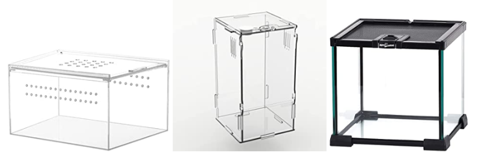

In this page we will discuss where you can obstain a Jumping spider, How to house them, Feeding information, health and cleanliness information, and how to interact with your jumping spider.
Where to get a jumping spider
Although like any other animal you can purchase jumping spiders to keep as pets, unlike most, you can actually catch one yourself!(don’t worry Jumping spiders are one of the few creatures that do extremely well being wild caught)
Buying:
There are many online places you can purchase jumping spiders, you can also possibly find some at a local pet store although it may be harder to find as they are not a common companion animal.
Catching:
Steps to catching: knowledge, tracking, luring, containing, and keeping.
!!Before anything, make sure you know what type of spider you are looking for and are confident in your ability to recognize them. You do not want to run into a spider you dont recognize or one that is a danger to you.!!
Note:
There is argument around the ethicality and possible cruelty of wild-caught spiders. But regardless treat them with respect and know what you are doing before obtaining a jumping spider or any pet/animal for that matter. Do not attempt to keep them as a pet before obtaining all necessary equipment (which I will discuss further down) and knowledge for the particular animal.
Jumping Spider Housing
You’ll need an escape-proof enclosure with ventilation. Any clear plastic container will do but If you feel like treating them there are “real” enclosures you can buy or make too.

Decorations:
You need to include some sort of absorption and cushioning material on the floor of the enclosure. This can include; paper towels, coir, coco fiber work, potting soil, plants, small branches, twigs, etc. You can create your own, or purchase some, either way, it is important for the health and safety of your spider.
You can decorate the enclosure with a variety of things including; branches, stones, driftwood, etc. These will also provide your spider shelter to hide.
Climate / Habitat:
Generally, your jumping spider will be able to survive room temperature, which is around 68 – 77 °F (20 – 25 °C). Certain species may have slight variation due to geographical origin, do you research to make sure you don’t over or under-heat them.
Proper humidity is also important, you should mist the enclosure weekly (may need more for tropical species), you can also put a small water dish to allow them to self-regulate a bit.
Spiders are diurnal (active in the daytime), you can place them in a bright place or have a timed sunlight lamp. Make sure they are not in direct sunlight or too warm. Also make sure they have a dark area to rest.
Note:
There is argument around the ethicality and possible cruelty of wild-caught spiders. But regardless treat them with respect and know what you are doing before obtaining a jumping spider or any pet/animal for that matter. Do not attempt to keep them as a pet before obtaining all necessary equipment (which I will discuss further down) and knowledge for the particular animal.
Feeding
The food s jumping spider varies a bit between species but in general jumping spiders eat small insects. Although they are excellent hunters and are known for catching prey much larger than them at times, you should limit the feed to 1.5 times larger than they are to avoid injury or casualty.
You can feed a variety of insects including;
crickets
flies
roaches
moths
mealworms
Many of which can be both bought and maintained at home!
Keeping you spider healthy and hygenic
Clean the enclosure and change the substrates once every 2-3 months. If you laid paper towels in the enclosure, change the paper towel when it looks dirty. Sometimes, there will be leftover limbs of the feeder insects. Just remove it whenever you see it. Otherwise, it will rot, grow molds and attract pests.
Molting
Jumping spiders grow by molting and depending on species and sex, they will molt 6-9 times in their entire life. Each time taking up to two weeks, during this time the jumping spiders spin webs and hide inside. When you notice that, stop giving your spider food and don’t disturb them. Continue to mist the enclosure as usual. When finished iIt takes 2-3 days before the newly formed skin is fully hardened. You should start feeding and/or handling your jumping spider only after its skin has hardened.
How to interact with and properly handle your spider
Jumping spiders can be easily handled by bare hands. They rarely bite. Even if they do, their venom is too weak to cause serious harm unless you are allergic. If handling outside enclosure be careful not to lose them!
Most importantly, Start slow, let them settle in before trying to interact for the first time, and exist around them for a while before directly interacting.